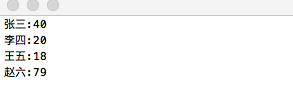

文件系统
遍历目录
格式:
cd destination
绝对文件路径 |
查看当前目录路径
pwd |
文件基本操作操作
显示当前目录下的文件和目录, 按字母排序, 展示顺序为按列 |
文件的长列表
如果需要查看更多的信息, 比如文件类型,文件权限,属组或属主,大小等
ls -l |
过滤输出信息
例如如果你只想想查找目录下的test.java文件的相关信息. 不想显示出其他信息干扰到你. 你可以这样
只显示过滤要求的文件相关信息 |
上面的后两种使用星号或者问号被称为文件扩展匹配, 就是使用通配符进行模糊匹配的过程. 还有一些其他的通配符. 还是以test.java为例
指定某个位置的的区间, [a-z], abc...xyz都可以 |
文件创建
创建一个空文件
touch命令
创建一个名字为 Hello.java 的文件 |
复制文件
cp source destination
文件 -> 文件的拷贝 |
链接文件
链接是目录中指向文件真实位置的占位符.
符号链接: 一个真实的文件. 指向存放在虚拟目录结构中的一个文件.硬链接: 会创建独立的虚拟文件, 包含原始文件的信息及位置. 但他们根本而言是一个文件
符号链接 |
重命名文件
重命名也被称为
移动(moving), 主要是mv命令
修改文件 test.java 名为 new_test.java |
删除文件
rm删除也称为移除removing. 但要注意, 一旦删除了可以无法找回的. 所以删除前一定要确认好信息
删除文件 Hello.txt |
创建目录
创建一个目录 |
删除目录
# 删除一个目录 |
查看文件类型
file能够探测文件内部, 并决定文件时什么类型
# 查看文件的类型 |
查看整个文件
cat,more,less这是很便捷的工具
# 你想查看一个Hello.java的类的内容 |
这里有一个问题, 如果打开的文本很大, 那么直接使用cat会加载全部的内容. 或许我们需要进行控制, 那么more命令分页工具现在就可以登场了.
# 分页显示 |
这回在显示一屏的内容之后停止下来. 你可以通过上下方向键控制. 也可以通过空格进行翻页. q键可推出预览模式.
less命令工具, 这是一个比more更高级一些的根据. 功能和使用很相似.
查看部分文件
如果只关心头部和尾部的内容. 那么
tail和head命令. 可以很好的解决这种场景
tail尾部查看
查看文件的尾部 |
head头部查看
查看头部内容 , 默认显示前10行 |
检测程序
进程查看
ps默认显示运行在当前控制台下属于当前用户的进程
-e 参数可以显示所有运行在系统上的进程 |
关于-f的扩展出的选项的字段含义
| UID | 启动这些进程的用户 |
|---|---|
| PID | 进程的进程ID |
| PPID | 父进程的进程号 |
| C | 进程生命周期中的系统时间 |
| STIME | 进程启动时的系统时间 |
| TTY | 进程启动时的终端设备 |
| TIME | 运行进程需要的累积CPU时间 |
| CMD | 启动程序名称 |
关于-l参数字段的含义
| F | 内核分配给进程的系统标记 |
|---|---|
| S | 进程的状态(O运行; S休眠; R可运行正在等待运行; Z僵化; 进程已结束但父进程不在; T停止) |
| PRI | 进程的优先级, 数字越大优先级越低 |
| NI | 谦让度值用来参与决定优先级 |
| ADDR | 进程的内存地址 |
| SZ | 加入进程被换出, 所需要交换空间的大致大小 |
| WCHAN | 进程休眠的内核函数地址 |
查看实时进程监测 |
磁盘空间
mount
用来挂载媒体的命令叫做mount. 默认情况下, mount命令会输出当前系统上挂载的设备列表
显示当前系统上挂载的设备列表 |
一般输入会是如下
/dev/disk1 on / (hfs, local, journaled) |
如果需要手动挂载, 需要root权限
mount -t type device directory |
卸载设备umount
形式: umount [ directory | device ]
df命令
df可以快速的知道某个设备上还有多少磁盘空间, 方便查看所有已经挂载的磁盘情况
配合 -h 可以把输出按照用户易读的形式表示. 如M, G |
du命令
df可以很容易发现那个磁盘的存储空间快没了.du就是接下来要处理问题的工具, 它可以显示某个特定目录下的磁盘使用情况. 这一方法可用来快速判断系统上某个目录下是不是有超大文件.
常规使用, 显示当前目录下所有的文件, 目录, 和子目录的使用情况 |
数据的排序
sort命令按照会话指定的默认语言的排序规则对文本文件中的数据进行排序
例如:

如果你要排序的是数字, 那么需要通过-n让sort命令不要把数字当成字符处理. 这样对于100 > 2的情况就可以避免
让sort命令识别数字, 而不是把每一个数字当成字符处理 |
不仅仅如此, 例如如果我们有这么一个键值表:

如果想进行年龄的排序, 那么使用-k和-t参数进行年龄字段的排序.
-t: 可以指定字段分隔符-k: 指定排序的字段
例如上面这个图, 分割字段就是:, 根据排序的条件是第二个字段

那么如果想查看目录下所有文件的占用排序, 就可以
从大到小排序 |
搜索数据
在大文件查找一条数据, 通过
grep命令就可直接查找grep会在输入或者指定的文件中查找包含匹配指定模式的字符的行
# 查找文件中的张三的行 |
grep是一个基础的搜索工具, 衍生版本也是存在的
egrep: 是grep的衍生, 支持POSIX扩展正则表达式. 含有更多可以用来指定匹配的模式的字符fgrep: 则是另外一个版本, 支持将匹配模式指定为用换行符分隔的一系列的固定长度的字符串. 这样就可以把这列字符串放到一个文件中.
压缩数据
压缩数据主要针对一个文件
| 工具 | 文件扩展名 | 描述 |
|---|---|---|
| bzip2 | .bz2 | 采用Burrows-Wheeler块排序文本压缩算法和霍夫曼编码 |
| compress | .Z | 最早的Unix文件压缩工具, 基本没人用 |
| gzip | .gz | GNU压缩工具, 用Lempel-Ziv编码 |
| zip | .zip | Window上PKZIP工具的Unix实现 |
gzip软件包含以下工具:
gzip: 用来压缩文件gzcat: 用来查看压缩过的文本文件的内容gunzip: 用来解压文件
用法和bzip2一样
归档数据
在
Unix和Linux上最广泛使用的归档工具是tar命令
tar命令的基本格式
tar function [options] object1 object2 ...
function参数可选
| 功能 | 长名称 | 描述 |
|---|---|---|
| -A | –concatenate | 将一个已有tar归档文件追加到另一个已有tar归档文件 |
| -c | –create | 创建一个新的tar归档文件 |
| -d | –diff | 检查归档文件和文件系统的不同之处 |
| –delete | 从已有tar归档文件中删除 | |
| -r | –append | 追加文件到已有tar归档文件末尾 |
| -t | –list | 列出已有tar归档文件的内容 |
| -u | –update | 将比tar归档文件中已有的同名文件,新的文件追加到该tar归档文件中 |
| -x | –extract | 从已有tar归档文件中提取文件 |
option常用选项
| 选项 | 描述 |
|---|---|
| -C dir | 切换到指定目录 |
| -f file | 输出结果到文件或设备file |
| -j | 将输出重定向给bzip2命令来压缩内容 |
| -p | 保留所有文件权限 |
| -v | 在处理文件时显示文件 |
| -z | 将输出重定向给gzip命令来压缩内容 |
列举常用的方式
创建归档, 把test/ test2/两个文件夹的内容进行归档 |